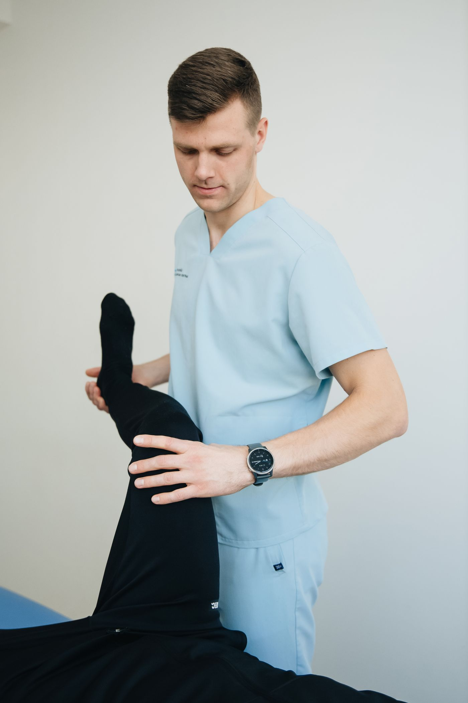
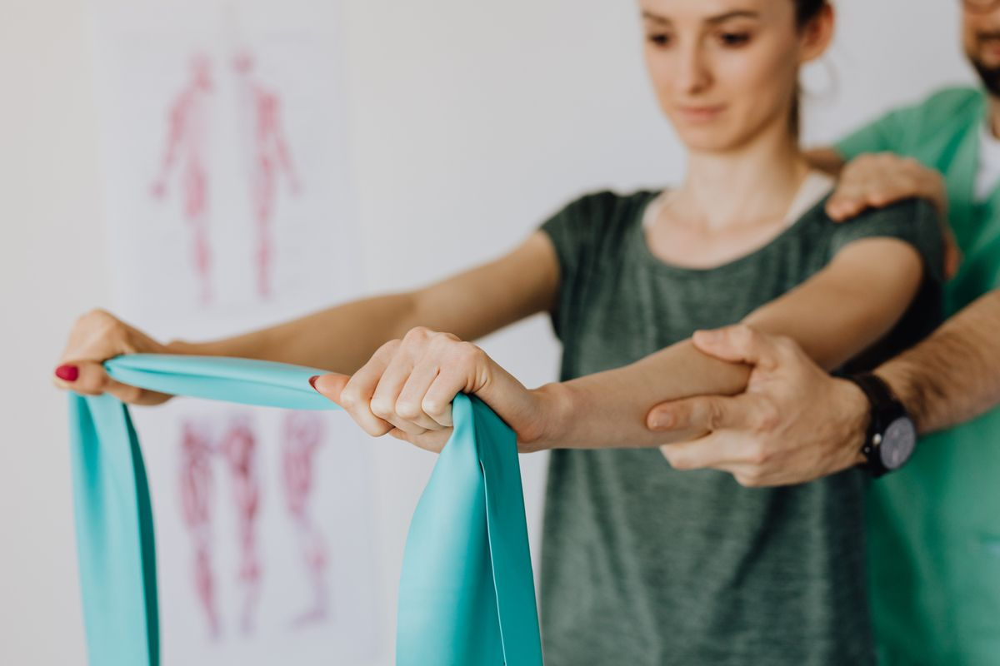
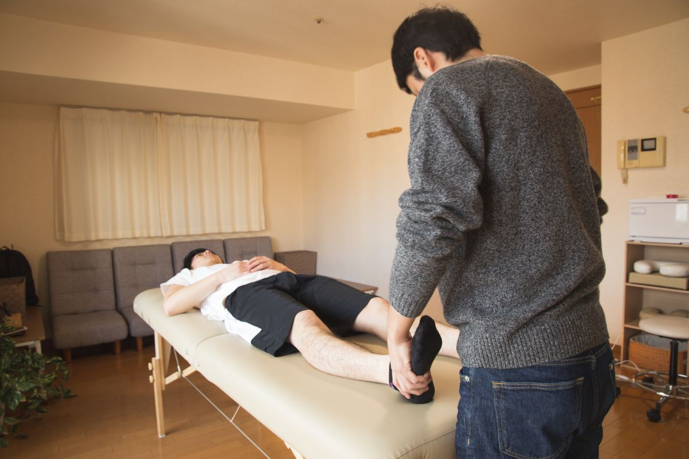
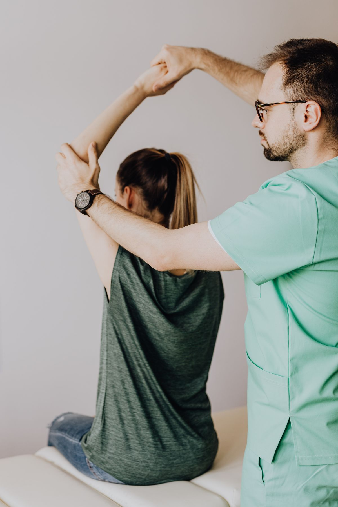

Terapia dobrana do Ciebie, nie z gotowego schematu. W gabinecie w Sandomierzu albo u Ciebie w domu — tak, jak jest Ci wygodniej.

„Od kiedy trafiłam do Pana Mirka, mój kręgosłup wreszcie zaczął odpuszczać.”
Katarzyna Z. Opinia z Google, 7 miesięcy temu
Prowadzę gabinet w Sandomierzu, ale najważniejsze jest dla mnie to, co dzieje się między wizytami: czy ból ustępuje, czy wracasz do ruchu, którego Ci brakowało. Każdą terapię dopasowuję indywidualnie — do Twojego ciała, historii i tempa powrotu do formy.
Poznaj mnie bliżej →Bez względu na to, gdzie zaczyna się Twój ból i jak długo z nim żyjesz — dobieramy bezpieczną drogę powrotu do sprawności.

Pełne zaplecze i spokojna atmosfera do pracy nad Twoim ciałem — bez pośpiechu, z pełną uwagą poświęconą Tobie.

Gdy wyjście z domu jest trudne albo po prostu wygodniej Ci u siebie — terapia przyjeżdża do Ciebie, bez utraty jakości opieki.

Konsekwentna praca nad odbudową sprawności po kontuzji, operacji lub przy przewlekłych dolegliwościach bólowych.
„Od kiedy trafiłam lata temu do Pana Mirka, mój kręgosłup zaczął wreszcie odpuszczać.”
„Pan mi pomaga z plecami, 2-3 spotkania i już odczułem efekty. Polecam serdecznie.”
„Ogromna wiedza, doświadczenie oraz wysoka kultura osobista. Praca z nim to przyjemność.”
Im szybciej zaczniemy, tym łatwiej wrócić do pełnej sprawności. Zadzwoń i porozmawiajmy o Twoim przypadku.
Zadzwoń teraz: 606 287 889Wałowa 38 A, 27-600 Sandomierz
Czynne całą dobę — zadzwoń o dogodnej dla Ciebie porze
Pełny formularz kontaktowy i wszystkie dane znajdziesz na stronie kontaktowej.
Przejdź do formularza kontaktowego